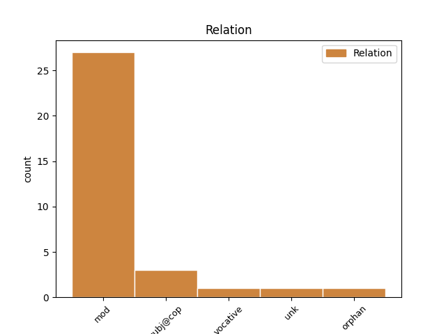

Distribution of features within this leaf

Agreement Rules sorted by frequency.
- When the dependent token is the modifer(mod) of the head token, and the head token is PRON and the dependent token is PRON.
1 Ni _ _ _ _ 0 _ _ _
2 paljud _ _ _ _ 0 _ _ _
3 nimesed _ _ _ _ 0 _ _ _
4 on _ _ _ _ 0 _ _ _
5 oma _ _ _ _ 0 _ _ _
6 mures _ _ _ _ 0 _ _ _
7 üksi _ _ _ _ 0 _ _ _
8 , _ _ _ _ 0 _ _ _
9 sest _ _ _ _ 0 _ _ _
10 neil _ _ _ _ 0 _ _ _
11 pole _ _ _ _ 0 _ _ _
12 kellegiga _ _ _ _ 0 _ _ _
13 rääkida _ _ _ _ 0 _ _ _
14 ja _ _ _ _ 0 _ _ _
15 inimesed _ _ _ _ 0 _ _ _
16 , _ _ _ _ 0 _ _ _
17 kes kes PRON P Case=Nom|Number=Plur|PronType=Int,Rel 0 _ _ _
18 ise ise PRON P Case=Nom|Number=Plur|PronType=Prs|Reflex=Yes 17 mod _ _
19 neid _ _ _ _ 0 _ _ _
20 hooge _ _ _ _ 0 _ _ _
21 ei _ _ _ _ 0 _ _ _
22 põe _ _ _ _ 0 _ _ _
23 ei _ _ _ _ 0 _ _ _
24 saa _ _ _ _ 0 _ _ _
25 ka _ _ _ _ 0 _ _ _
26 hästi _ _ _ _ 0 _ _ _
27 aru _ _ _ _ 0 _ _ _
28 , _ _ _ _ 0 _ _ _
29 millest _ _ _ _ 0 _ _ _
30 nad _ _ _ _ 0 _ _ _
31 räägivad _ _ _ _ 0 _ _ _
32 ! _ _ _ _ 0 _ _ _
1 Mul _ _ _ _ 0 _ _ _
2 pole _ _ _ _ 0 _ _ _
3 eriti _ _ _ _ 0 _ _ _
4 teisi _ _ _ _ 0 _ _ _
5 sõpru _ _ _ _ 0 _ _ _
6 , _ _ _ _ 0 _ _ _
7 siis _ _ _ _ 0 _ _ _
8 nad _ _ _ _ 0 _ _ _
9 hakkavad _ _ _ _ 0 _ _ _
10 jah _ _ _ _ 0 _ _ _
11 veel _ _ _ _ 0 _ _ _
12 rohkem _ _ _ _ 0 _ _ _
13 taga _ _ _ _ 0 _ _ _
14 rääkima _ _ _ _ 0 _ _ _
15 ju _ _ _ _ 0 _ _ _
16 see _ _ _ _ 0 _ _ _
17 üks üks PRON P Case=Nom|Number=Sing|PronType=Dem 28 unk _ _
18 kellega _ _ _ _ 0 _ _ _
19 mul _ _ _ _ 0 _ _ _
20 oma _ _ _ _ 0 _ _ _
21 arust _ _ _ _ 0 _ _ _
22 olid _ _ _ _ 0 _ _ _
23 normid _ _ _ _ 0 _ _ _
24 suhted _ _ _ _ 0 _ _ _
25 eks _ _ _ _ 0 _ _ _
26 , _ _ _ _ 0 _ _ _
27 siis _ _ _ _ 0 _ _ _
28 ta tema PRON P Case=Nom|Number=Sing|Person=3|PronType=Prs 0 _ _ _
29 mingi _ _ _ _ 0 _ _ _
30 msnis _ _ _ _ 0 _ _ _
31 : _ _ _ _ 0 _ _ _
32 Sa _ _ _ _ 0 _ _ _
33 oled _ _ _ _ 0 _ _ _
34 ikka _ _ _ _ 0 _ _ _
35 nii _ _ _ _ 0 _ _ _
36 beibeks _ _ _ _ 0 _ _ _
37 muutunud _ _ _ _ 0 _ _ _
38 mai _ _ _ _ 0 _ _ _
39 tia _ _ _ _ 0 _ _ _
40 , _ _ _ _ 0 _ _ _
41 see _ _ _ _ 0 _ _ _
42 on _ _ _ _ 0 _ _ _
43 nii _ _ _ _ 0 _ _ _
44 vastik _ _ _ _ 0 _ _ _
45 ! _ _ _ _ 0 _ _ _
46 ! _ _ _ _ 0 _ _ _
47 ! _ _ _ _ 0 _ _ _
48 ! _ _ _ _ 0 _ _ _
49 ! _ _ _ _ 0 _ _ _
50 ! _ _ _ _ 0 _ _ _
51 ! _ _ _ _ 0 _ _ _
52 ! _ _ _ _ 0 _ _ _
1 Mul _ _ _ _ 0 _ _ _
2 pole _ _ _ _ 0 _ _ _
3 eriti _ _ _ _ 0 _ _ _
4 teisi _ _ _ _ 0 _ _ _
5 sõpru _ _ _ _ 0 _ _ _
6 , _ _ _ _ 0 _ _ _
7 siis _ _ _ _ 0 _ _ _
8 nad _ _ _ _ 0 _ _ _
9 hakkavad _ _ _ _ 0 _ _ _
10 jah _ _ _ _ 0 _ _ _
11 veel _ _ _ _ 0 _ _ _
12 rohkem _ _ _ _ 0 _ _ _
13 taga _ _ _ _ 0 _ _ _
14 rääkima _ _ _ _ 0 _ _ _
15 ju _ _ _ _ 0 _ _ _
16 see _ _ _ _ 0 _ _ _
17 üks _ _ _ _ 0 _ _ _
18 kellega _ _ _ _ 0 _ _ _
19 mul _ _ _ _ 0 _ _ _
20 oma _ _ _ _ 0 _ _ _
21 arust _ _ _ _ 0 _ _ _
22 olid _ _ _ _ 0 _ _ _
23 normid _ _ _ _ 0 _ _ _
24 suhted _ _ _ _ 0 _ _ _
25 eks _ _ _ _ 0 _ _ _
26 , _ _ _ _ 0 _ _ _
27 siis _ _ _ _ 0 _ _ _
28 ta tema PRON P Case=Nom|Number=Sing|Person=3|PronType=Prs 0 _ _ _
29 mingi mingi PRON P Case=Nom|Number=Sing|PronType=Ind 28 orphan _ Orphan=Yes
30 msnis _ _ _ _ 0 _ _ _
31 : _ _ _ _ 0 _ _ _
32 Sa _ _ _ _ 0 _ _ _
33 oled _ _ _ _ 0 _ _ _
34 ikka _ _ _ _ 0 _ _ _
35 nii _ _ _ _ 0 _ _ _
36 beibeks _ _ _ _ 0 _ _ _
37 muutunud _ _ _ _ 0 _ _ _
38 mai _ _ _ _ 0 _ _ _
39 tia _ _ _ _ 0 _ _ _
40 , _ _ _ _ 0 _ _ _
41 see _ _ _ _ 0 _ _ _
42 on _ _ _ _ 0 _ _ _
43 nii _ _ _ _ 0 _ _ _
44 vastik _ _ _ _ 0 _ _ _
45 ! _ _ _ _ 0 _ _ _
46 ! _ _ _ _ 0 _ _ _
47 ! _ _ _ _ 0 _ _ _
48 ! _ _ _ _ 0 _ _ _
49 ! _ _ _ _ 0 _ _ _
50 ! _ _ _ _ 0 _ _ _
51 ! _ _ _ _ 0 _ _ _
52 ! _ _ _ _ 0 _ _ _
1 Oled _ _ _ _ 0 _ _ _
2 sa sina PRON P Case=Nom|Number=Sing|Person=2|PronType=Prs 0 _ _ _
3 Posta Posta PROPN S Case=Nom|Number=Sing 2 vocative _ _
4 veidi _ _ _ _ 0 _ _ _
5 ilmutuseraamatuga _ _ _ _ 0 _ _ _
6 tegelenud _ _ _ _ 0 _ _ _
7 ! _ _ _ _ 0 _ _ _
1 tee _ _ _ _ 0 _ _ _
2 endale _ _ _ _ 0 _ _ _
3 väga _ _ _ _ 0 _ _ _
4 selgeks _ _ _ _ 0 _ _ _
5 enne _ _ _ _ 0 _ _ _
6 asjad _ _ _ _ 0 _ _ _
7 aga _ _ _ _ 0 _ _ _
8 ära _ _ _ _ 0 _ _ _
9 igaksu _ _ _ _ 0 _ _ _
10 juhuks _ _ _ _ 0 _ _ _
11 sellist _ _ _ _ 0 _ _ _
12 toorest _ _ _ _ 0 _ _ _
13 asja _ _ _ _ 0 _ _ _
14 välja _ _ _ _ 0 _ _ _
15 paiska _ _ _ _ 0 _ _ _
16 , _ _ _ _ 0 _ _ _
17 mõni _ _ _ _ 0 _ _ _
18 võib _ _ _ _ 0 _ _ _
19 uskuma _ _ _ _ 0 _ _ _
20 jääda _ _ _ _ 0 _ _ _
21 - _ _ _ _ 0 _ _ _
22 muud muu PRON P Case=Par|Number=Sing|PronType=Ind 24 subj@cop _ _
23 ei _ _ _ _ 0 _ _ _
24 midagi miski PRON P Case=Par|Number=Sing|PronType=Ind 0 _ _ _
25 . _ _ _ _ 0 _ _ _
Disagree Examples:
1 Kahjuks _ _ _ _ 0 _ _ _
2 ei _ _ _ _ 0 _ _ _
3 saa _ _ _ _ 0 _ _ _
4 meist mina PRON P Case=Ela|Number=Plur|Person=1|PronType=Prs 5 mod _ _
5 keegi keegi PRON P Case=Nom|Number=Sing|PronType=Ind 0 _ _ _
6 vist _ _ _ _ 0 _ _ _
7 elada _ _ _ _ 0 _ _ _
8 ilma _ _ _ _ 0 _ _ _
9 kannatusteta _ _ _ _ 0 _ _ _
10 . _ _ _ _ 0 _ _ _
1 Kes kes PRON P Case=Nom|Number=Sing|PronType=Int,Rel 0 _ _ _
2 meist mina PRON P Case=Ela|Number=Plur|Person=1|PronType=Prs 1 mod _ _
3 seda _ _ _ _ 0 _ _ _
4 enam _ _ _ _ 0 _ _ _
5 mäletab _ _ _ _ 0 _ _ _
6 , _ _ _ _ 0 _ _ _
7 milleks _ _ _ _ 0 _ _ _
8 jõule _ _ _ _ 0 _ _ _
9 esialgselt _ _ _ _ 0 _ _ _
10 tähistati _ _ _ _ 0 _ _ _
11 ? _ _ _ _ 0 _ _ _
1 Mis mis PRON P Case=Nom|Number=Sing|PronType=Int,Rel 2 subj@cop _ _
2 sest see PRON P Case=Ela|Number=Sing|PronType=Dem 0 _ _ _
3 , _ _ _ _ 0 _ _ _
4 et _ _ _ _ 0 _ _ _
5 interss _ _ _ _ 0 _ _ _
6 on _ _ _ _ 0 _ _ _
7 väike _ _ _ _ 0 _ _ _
8 , _ _ _ _ 0 _ _ _
9 paratamattusega _ _ _ _ 0 _ _ _
10 tuleb _ _ _ _ 0 _ _ _
11 leppida _ _ _ _ 0 _ _ _
12 . _ _ _ _ 0 _ _ _
1 Eriti _ _ _ _ 0 _ _ _
2 närviliselt _ _ _ _ 0 _ _ _
3 sebisid _ _ _ _ 0 _ _ _
4 seal _ _ _ _ 0 _ _ _
5 ringi _ _ _ _ 0 _ _ _
6 Britney _ _ _ _ 0 _ _ _
7 Spearsi _ _ _ _ 0 _ _ _
8 mp3-d _ _ _ _ 0 _ _ _
9 , _ _ _ _ 0 _ _ _
10 mis _ _ _ _ 0 _ _ _
11 olid _ _ _ _ 0 _ _ _
12 kohe _ _ _ _ 0 _ _ _
13 kui _ _ _ _ 0 _ _ _
14 Rammsteini _ _ _ _ 0 _ _ _
15 lood _ _ _ _ 0 _ _ _
16 eesotsas _ _ _ _ 0 _ _ _
17 rummstain_DuHast_(LIVE).mp3-ga _ _ _ _ 0 _ _ _
18 oma _ _ _ _ 0 _ _ _
19 folderist _ _ _ _ 0 _ _ _
20 välja _ _ _ _ 0 _ _ _
21 ronisid _ _ _ _ 0 _ _ _
22 ja _ _ _ _ 0 _ _ _
23 suruõhuvasarate _ _ _ _ 0 _ _ _
24 , _ _ _ _ 0 _ _ _
25 kirkade _ _ _ _ 0 _ _ _
26 ja _ _ _ _ 0 _ _ _
27 bensiinikanistriga _ _ _ _ 0 _ _ _
28 ( _ _ _ _ 0 _ _ _
29 kanister _ _ _ _ 0 _ _ _
30 oli _ _ _ _ 0 _ _ _
31 päris _ _ _ _ 0 _ _ _
32 äge _ _ _ _ 0 _ _ _
33 : _ _ _ _ 0 _ _ _
34 sellele _ _ _ _ 0 _ _ _
35 oli _ _ _ _ 0 _ _ _
36 peale _ _ _ _ 0 _ _ _
37 kirjutatud _ _ _ _ 0 _ _ _
38 " _ _ _ _ 0 _ _ _
39 Wehrmacht _ _ _ _ 0 _ _ _
40 1942 _ _ _ _ 0 _ _ _
41 " _ _ _ _ 0 _ _ _
42 ja _ _ _ _ 0 _ _ _
43 Ilmselt _ _ _ _ 0 _ _ _
44 oli _ _ _ _ 0 _ _ _
45 tegu _ _ _ _ 0 _ _ _
46 yhega üks PRON P Case=Com|Number=Sing|PronType=Dem 0 _ _ _
47 nendest see PRON P Case=Ela|Number=Plur|PronType=Dem 46 mod _ SpaceAfter=No
48 , _ _ _ _ 0 _ _ _
49 mis _ _ _ _ 0 _ _ _
50 keegi _ _ _ _ 0 _ _ _
51 kavalpea _ _ _ _ 0 _ _ _
52 sõja _ _ _ _ 0 _ _ _
53 päevil _ _ _ _ 0 _ _ _
54 kõrvale _ _ _ _ 0 _ _ _
55 pani _ _ _ _ 0 _ _ _
56 ja _ _ _ _ 0 _ _ _
57 nyyd _ _ _ _ 0 _ _ _
58 paar _ _ _ _ 0 _ _ _
59 aastat _ _ _ _ 0 _ _ _
60 tagasi _ _ _ _ 0 _ _ _
61 Hauka _ _ _ _ 0 _ _ _
62 laadal _ _ _ _ 0 _ _ _
63 saja _ _ _ _ 0 _ _ _
64 krooniga _ _ _ _ 0 _ _ _
65 maha _ _ _ _ 0 _ _ _
66 myys _ _ _ _ 0 _ _ _
67 . _ _ _ _ 0 _ _ _
1 Peale _ _ _ _ 0 _ _ _
2 Dimmut _ _ _ _ 0 _ _ _
3 sugenes _ _ _ _ 0 _ _ _
4 playlisti _ _ _ _ 0 _ _ _
5 yks _ _ _ _ 0 _ _ _
6 kahtlane _ _ _ _ 0 _ _ _
7 kamp _ _ _ _ 0 _ _ _
8 Slipknoti _ _ _ _ 0 _ _ _
9 lugusid _ _ _ _ 0 _ _ _
10 , _ _ _ _ 0 _ _ _
11 kes _ _ _ _ 0 _ _ _
12 hakkasid _ _ _ _ 0 _ _ _
13 ... _ _ _ _ 0 _ _ _
14 noh _ _ _ _ 0 _ _ _
15 .. _ _ _ _ 0 _ _ _
16 see see PRON P Case=Nom|Number=Sing|PronType=Dem 17 subj@cop _ _
17 selleks see PRON P Case=Tra|Number=Sing|PronType=Dem 0 _ _ _
18 .. _ _ _ _ 0 _ _ _
19 hakkasid _ _ _ _ 0 _ _ _
20 tegema _ _ _ _ 0 _ _ _
21 seda _ _ _ _ 0 _ _ _
22 , _ _ _ _ 0 _ _ _
23 mida _ _ _ _ 0 _ _ _
24 nad _ _ _ _ 0 _ _ _
25 parasjagu _ _ _ _ 0 _ _ _
26 tegema _ _ _ _ 0 _ _ _
27 hakkasid _ _ _ _ 0 _ _ _
28 - _ _ _ _ 0 _ _ _
29 pole _ _ _ _ 0 _ _ _
30 teil _ _ _ _ 0 _ _ _
31 ka _ _ _ _ 0 _ _ _
32 vaja _ _ _ _ 0 _ _ _
33 kõike _ _ _ _ 0 _ _ _
34 teada _ _ _ _ 0 _ _ _
35 ! _ _ _ _ 0 _ _ _
36 ja _ _ _ _ 0 _ _ _
37 pealgi _ _ _ _ 0 _ _ _
38 võivad _ _ _ _ 0 _ _ _
39 seda _ _ _ _ 0 _ _ _
40 juttu _ _ _ _ 0 _ _ _
41 ka _ _ _ _ 0 _ _ _
42 väiksed _ _ _ _ 0 _ _ _
43 lapsed _ _ _ _ 0 _ _ _
44 lugeda _ _ _ _ 0 _ _ _
45 : _ _ _ _ 0 _ _ _
46 te _ _ _ _ 0 _ _ _
47 nende _ _ _ _ 0 _ _ _
48 peale _ _ _ _ 0 _ _ _
49 ka _ _ _ _ 0 _ _ _
50 yldse _ _ _ _ 0 _ _ _
51 mõtle _ _ _ _ 0 _ _ _
52 või _ _ _ _ 0 _ _ _
53 -ah _ _ _ _ 0 _ _ _
54 ! _ _ _ _ 0 _ _ _
55 ? _ _ _ _ 0 _ _ _